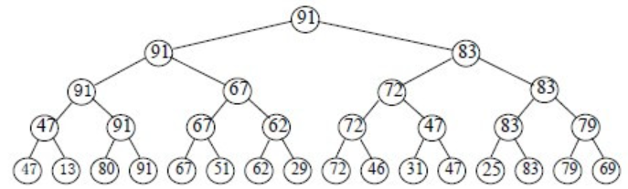

排序与表达式专题

内排序
对内存中的n个对象进行排序，不需要借助外存
插入排序
$Insert~Sorting$
直接插入排序
算法思想
将需要排序的数组分为排好序和未排序的两部分，每次从未排序部分中取出首元素插入到排好序的部分中（需要包含将部分数组整体后移的过程）
代码示例
int pos;
//数组从0开始标号
for(int i = 1; i < n; i++){
//需要插入a[i]
int t = a[i];
//找出插入位置的同时移动数组
for(pos = i - 1; pos > 0 && a[pos] > a[i]; pos--)
a[pos] = a[pos - 1];
a[pos] = t;
}
过程示例
| 排好序部分 | 未排序部分 |
|---|---|
| 8 | 3 2 5 9 1 6 |
| 3 8 | 2 5 9 1 6 |
| 2 3 8 | 5 9 1 6 |
| 2 3 5 8 | 9 1 6 |
| …… | …… |
复杂度分析
对于已经顺序排好的数组而言（最好情况），每个内层循环只需要执行一次比较即可，不需要进行移动和交换，因此复杂度是$O(n)$
对于逆序的数组而言（最坏情况），每个内层循环都需要遍历整个排好序的部分并进行移动，因此复杂度是$\sum_{i=1}^{n-1}i=O(n^2)$
一般情况下根据等概率估算得到的复杂度仍然为$O(n^2)$
稳定性分析
在寻找插入位置时不会插入到相同键值元素的前面，因此直接插入排序是稳定的
折半插入排序
也称为二分法插入排序
算法思想
由于数组的前半部分已经完成了排序，所以可以对前半部分使用二分法以优化查找插入位置的过程，但是需要单独执行将数组整体后移的过程
核心代码
//二分查找插入a[i]的位置
int t = a[i];
int l = 0, r = i - 1;
while(l <= r){
int mid = (l + r)>>1;
if(t < a[mid])
r = mid - 1;
else
l = mid + 1;
}
//查找结束后l即为需要插入的位置，数组整体后移并替换
for(int j = i - 1; j >= l; j--)
a[j + 1] = a[j];
a[l] = t;
复杂度分析
不管原有数组的排序情况如何，每次二分查找插入位置都需要$log_2(length)$次查找，因此该算法的时间复杂度稳定在$O(nlog_2n)$
稳定性分析
在查找插入位置时，对于相同键值的元素会进入到l=mid+1的分支，即插入在相同键值元素的后面，因此是稳定的
希尔排序
$Shell~Sort$，也称为缩小增量排序($Diminishing-increament~Sort$)
算法思想
取某一值作为增量gap，将间隔gap的元素分为一组，在组内采用插入排序；然后逐渐减少增量，直到增量为1
代码示例
for(int gap = n/2; gap; gap >>= 1){
//取间隔
for(int i = gap; i < n; i++){
//直接插入a[i]
int t = a[i];
int pos = i;
for(; pos >= gap && a[pos - gap] > a[pos]; pos -= gap)
a[pos] = a[pos - gap];
a[pos] = t;
}
}
复杂度分析
由于在每一个增量内部，组内的元素已经完成了排序，因此在减少增量时需要的比较与交换次数会较少。其具体的时间复杂度与选择的缩小增量有关，平均的比较与移动次数在$n^{1.3}$左右
稳定性分析
由于键值相同的元素可能会被分入不同的组，在不同的组内排序时其原先的顺序可能会被打乱，因此是不稳定的
表插入排序
算法思想
以额外的一个链表数据结构为基础实现直接插入排序
复杂度与稳定性分析
时间复杂度与稳定性与直接插入排序一致，但需要额外的$O(n)$级别的内存空间
交换排序
冒泡排序
$Bubble~Sort$
算法思想
从头到尾依次进行相邻元素的比较，以按从小到大排序，从前往后遍历为例，如果前面的元素大于后面的元素，则交换两个元素；因此经过这一趟冒泡后最大的元素就会被放在当前数组的尾部
代码示例
for(int i = 0; i < n; i++){
bool exchange = 0;
for(int j = 1; j < n - i; j++){
if(a[j] > a[j + 1]){
swap(a[j], a[j + 1]);
exchange = 1;
}
}
//如果当前趟没有进行交换，说明排序已经完成
if(!exchange)break;
}
复杂度分析
如果原有的数组已经有序（最好情况），则只需要运行一次内存循环，复杂度为$O(n)$
如果原有的数组逆序（最坏情况），则需要复杂度为$\sum_{i=1}^{n-1}i=O(n^2)$
平均情况下的复杂度为$O(n^2)$
稳定性分析
由于位于后面的元素不会与前一个相同键值的元素进行交换，因此该排序方式是稳定的
快速排序
$Quick~Sort$，也称为分区交换排序
算法思想
在需要排序的n个元素中选出一个基准元素，将所有键值小于等于它的元素放在其左边，键值大于它的元素放在其右边；然后对左右子序列递归执行上述操作
代码示例
void partition(int low, int high){
int l = low, r = high;
int pivot = a[l];
while(l != r){
//找出右侧不满足条件的元素
while(a[r] > pivot && l < r)r--;
//将其替换到满足条件的位置，最开始是用不满足条件的值替换pivot，原位置的值仍然不满足条件
if(l < r){
a[l] = a[r];
l++;
}
//找出左侧不满足条件的元素
while(a[l] < pivot && l < r)l++;
//将比pivot更大的值放在之前找到的不满足条件的位置，原位置仍然不满足条件，然后重复执行
if(l < r){
a[r] = a[l];
r--;
}
}
//循环结束后l == r，存储的是最后一个不满足条件的位置，但已经将其复制到了合适的位置，用pivot回替
a[l] = pivot;
//返回基准值所在的位置
return l;
}
void qsort(int l, int r){
if(l >= r)return;
//对当前序列执行操作
int pos = partition(l, r);
qsort(l, pos - 1);
qsort(pos + 1, r);
}
复杂度分析
如果每次选为基准的元素都是最小的元素且剩下的的元素已经升序排序（最坏情况），则时间复杂度会退化到$O(n^2)$
如果每次选为基准的元素都是处于中间的元素（最好情况），则时间复杂度可以达到$O(nlog_2n)$
平均时间复杂度为$O(nlog_2n)$，递归的栈空间额外需要$O(log_2n)$的空间复杂度
稳定性分析
如果需要排序的数组出现下面这种情况：64 25 98 33 25*，后面的25*就会被交换到25的前面，因此该排序算法是不稳定的
选择排序
$Selection~Sort$
直接选择排序
算法思想
将数组分为排序与未排序部分，每次在未排序部分中选出最小值，然后与其首部元素交换位置，重复执行n-1次
代码示例
for(int i = 0; i < n; i++){
int pos = i + 1;
for(int j = i + 1; j <= n; j++){
if(a[j] < a[pos])pos = j;
}
swap(a[i + 1], a[pos]);
}
复杂度分析
不管原数组排序情况如何，该算法都需要对数组进行n-1趟选择，因此时间复杂度固定为$O(n^2)$
稳定性分析
例如2 3 2* 1 4，原有的相同键值的元素的顺序可能会被破坏，因此该排序算法是不稳定的
锦标赛排序*
也称为树形选择排序
算法思想
数组中的元素两两进行比较，然后逐步选出较大值，最终选出最大值，然后将该元素标记为不参加下一次的操作，重复该操作n次，形成如下图所示的胜者树

复杂度分析
平均复杂度为$O(nlog_2n)$
稳定性分析
由于可以附加相同键值元素比较时优先左子树的策略，可以保证该排序算法的稳定性
堆排序
见《哈希与堆专题》
归并排序
算法思想
将对整个数组排序的任务分解成对数组多个部分排序的子任务，待子任务完成之后，再对子任务已经完成的排序进行合并
代码示例
void mergesort(int low, int high){
if(low >= high)return;
int mid = (low + high)>>1;
//对左半部分排序
mergesort(low, mid);
//对右半部分排序
mergesort(mid + 1, high);
//两部分排序完成，开始合并
int l = low, r = mid + 1, top = 0;
int t[MAXLENGTH];
while(l <= mid && r <= high){
if(a[l] <= a[r])
t[++top] = a[l++];
else
t[++top] = a[r++];
}
while(l <= mid)t[++top] = a[l++];
while(r <= high)t[++top] = a[r++];
for(int i = 1; i <= len; i++){
a[i] = t[i];
}
}
复杂度分析
从上面的代码中可以看出，该算法的时间复杂度固定为$O(nlog_2n)$，但需要额外$O(n)$的空间复杂度
稳定性分析
从上面的代码中可以看出，位于前半部分的相同键值的元素会先选入临时数组，因此该排序算法是稳定的
内排序特性一览表
| 算法名称 | 最好复杂度 | 最坏复杂度 | 平均复杂度 | 稳定性 | 最少移动 | 最多移动 | 空间复杂度 |
|---|---|---|---|---|---|---|---|
| 直接插入排序 | $n$ | $n(n-1)/2$ | $O(n^2)$ | 稳定 | $0$ | $n(n-1)/2$ | 常数 |
| 二分法插入排序 | $nlog_2n$ | $nlog_2n$ | $O(nlog_2n)$ | 稳定 | $0$ | $n(n-1)/2$ | 常数 |
| 表插入排序 | $n$ | $n(n-1)/2$ | $O(n^2)$ | 稳定 | – | – | $O(n)$ |
| 希尔排序 | – | – | – | 不稳定 | – | – | 常数 |
| 直接选择排序 | $n(n-1)/2$ | $n(n-1)/2$ | $O(n^2)$ | 不稳定 | $3(n-1)$ | $3(n-1)$ | 常数 |
| 堆排序 | $O(nlog_2n)$ | $O(nlog_2n)$ | $O(nlog_2n)$ | 不稳定 | – | – | 常数 |
| 冒泡排序 | $n-1$ | $n(n-1)/2$ | $O(n^2)$ | 稳定 | $0$ | $3n(n-1)/2$ | 常数 |
| 快速排序 | $nlog_2n$ | $n(n-1)/2$ | $O(nlog_2n)$ | 不稳定 | $\le nlog_2n$ | $\le nlog_2n$ | $O(log_2n)$ |
| 基数排序（见后面） | $O(d(n+r))$ | $O(d(n+r))$ | $O(d(n+r))$ | 稳定 | – | – | $O(n+r)$ |
| 归并排序 | $O(nlog_2n)$ | $O(nlog_2n)$ | $O(nlog_2n)$ | 稳定 | – | – | $O(n)$ |
外排序
内存中无法容纳n个对象，需要借助外存的排序，不做要求
其他排序
秩排序
$Rank~Sort$
算法思想
void rank(){
//计算各元素键值排名
memset(r, 0, sizeof(r));
//遍历所有C(n, 2)，键值大的元素排名+1
for(int i = 1;i < n; i++){
for(int j = 0; j < i; j++){
if(a[j] <= a[i])r[i]++;
else r[j]++;
}
}
}
void rank_sort(){
for(int i = 0; i < n; i++){
while(r[i] != i){
//如果当前位置上的元素与排名不符
int t = r[i];
//则将当前位置上的元素交换到它应该在的位置
swap(a[i], a[t]);
//同步更新排名数组
swap(r[i], r[t]);
}
}
}
复杂度分析
不管原数组的排序情况如何，该算法都一定会执行$C_n^2$次比较，即$\frac{n(n-1)}{2}$次，将$n$个元素归位需要的交换次数为$2n$，因此复杂度固定为$O(n^2)$
稳定性分析
计算排名时位于后面的相同键值元素的排名更大，因此该排序算法是稳定的
基数排序
算法思想
依次按照个位、十位、百位……（也可以反过来）用桶对数据进行排序，然后将数据串起来
中缀表达式转后缀表达式
如果遇到操作数则直接输出
如果遇到操作符则比较当前操作符与栈顶操作符的优先级，如果栈不为空且当前运算符的优先级更低或一致，则不断将栈顶操作符弹出并输出；否则就将当前操作符入栈
如果遇到左括号，就将左括号入栈，该操作符的优先级最高
如果遇到右括号，就不断出栈直到左括号从栈中弹出（不输出括号）
如果输入结束就将栈中元素全部弹出并输出